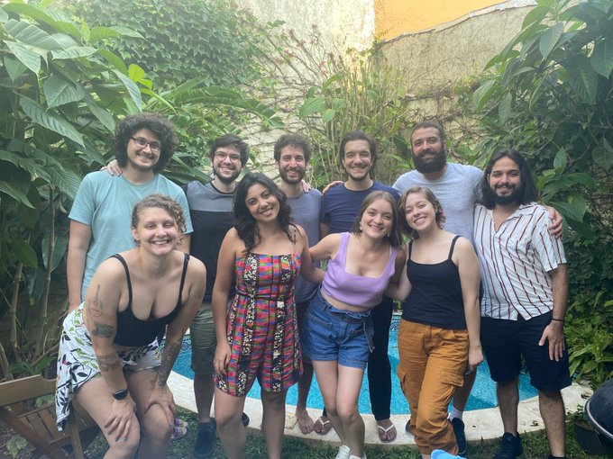

Atualmente trabalho como professor, programador e cientista de dados na Curso-R e na R6, empresas das quais sou sócio-fundador. Venho me especializando em construção de dashboards em Shiny. Você pode acessar e baixar o meu currículo clicando aqui.
A Curso-R é uma empresa que oferece cursos na área de Ciência de Dados, com foco em programação em R. A nossa missão é descomplicar a Ciência de Dados para todas as pessoas, independentemente da área de formação.
A R6 é uma empresa de consultoria na área de Ciência de Dados, que tem a linguagem de programação R como principal ferramenta. Somos especialistas em modelagem estatística, criação de dashboards em Shiny e web scraping.
Cursos que ministro
Cursos de programação em R e Ciência de Dados que ministro atualmente:
Trabalhos
A seguir alguns trabalhos abertos que realizei nos últimos anos.
üíª Hamilton Institute, Maynooth University (Irlanda)
Trabalhei com a equipe do Instituto Hamilton no desenvolvimento e manutenção aplicativos em Shiny para análise de dados de COVID-19. Também fiquei responsável pela manutenção do blog utilizado para divulgação dos resultados do projeto. O app não está sendo mais mantido pelo Instituo Hamilton, então é provável que não esteja mais no ar.
Atividades realizadas:
Organização dos códigos e construção da identidade visual dos aplicativos Shiny.
Desenvolvimento do framework de atualização automática dos dados dos aplicativos utilizando o Github Actions.
Implementação de melhorias na página do projeto (construída usando o pacote
{distill})
üíª Instituto Sou da Paz
Desenvolvi em conjunto da equipe do Instituto Sou da Paz o aplicativo Sou da Paz Analisa, uma ferramenta que centraliza, analisa e disponibiliza dados de criminalidade para o Estado de São Paulo.
Algumas reportagens sobre a ferramenta:
üíª Painel ODS6 para o Estado de SP
Desenvolvi em conjunto da Faculdade de Saúde Pública um painel para monitoramento de indicadores de acesso à água e esgoto para municípios do Estado de São Paulo.
Acesso o painel: https://nara-fspusp.shinyapps.io/ods6-sp/

üíª Projetos internos da Curso-R
Desenvolvimento do site da Curso-R
Feito em Hugo, com o pacote {blogdown}Desenvolvimento do blog da Curso-R
Feito em Hugo, com o pacote {blogdown}